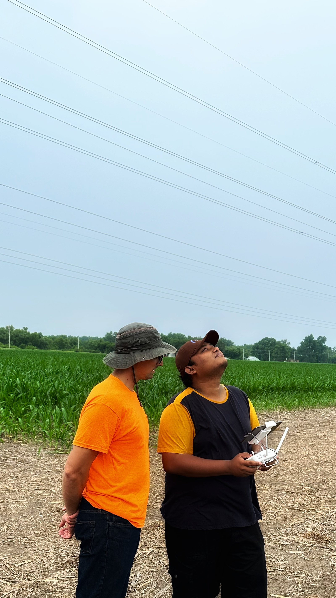

Hyperspectral sensing and spectral information
Wavelet decomposition, frame theory, derivatives, and spectral-textural analysis for soil and vegetation properties.
Research
My doctoral research develops geospatial AI methods for soil carbon prediction across depth using hyperspectral imagery, multisensor UAV data, and geospatial foundation-model representations.

Current direction
The work combines surface Earth observation with depth-resolved soil measurements to model subsurface carbon while explicitly constraining vertical profile behavior. Current methods include hyperspectral signal processing, physics-informed neural networks, multimodal feature integration, and geospatial foundation-model embeddings.
Research areas
Wavelet decomposition, frame theory, derivatives, and spectral-textural analysis for soil and vegetation properties.
Neural models that incorporate profile smoothness and profile-integral constraints for multi-depth soil carbon inference.
Evaluation of learned Earth-observation representations alongside optical imagery for subsurface prediction and cross-year environmental modeling.
Research recognition
School of Science and Engineering, Saint Louis University
Saint Louis University Graduate Student Association
SLU Graduate Student Association Research Symposium
Sigma Xi Research Symposium
School of Science and Engineering, Saint Louis University
Methods
Hyperspectral imaging, UAV photogrammetry, LiDAR, multispectral and thermal imagery, field spectroscopy.
PyTorch, TensorFlow, scikit-learn, RF, SVM, MLP/DNN, physics-informed models, feature engineering.
Python, R, MATLAB, SQL, Rasterio, GDAL, ArcGIS Pro, QGIS, ENVI, Google Earth Engine, HPC and Docker.